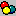

Options - Folders Tab (Tools Menu) |
  
|
Options - Folders Tab (Tools Menu) |
|
Icon:

. Keyboard Shortcut: ALT, T, OOpens the Rhvac Options dialog, where you can set custom preferences for Rhvac.
Click another tab on the picture below to go to help on that tab.
Favorites, Recent, Custom: Sets the folder location for the indicated material lists. Click the dropdown help button to the right of the input to browse for a folder.
OK button: Applies any changes you have made and closes this dialog.
Cancel button: Closes this dialog without making any changes.
Apply button: Applies any changes you have made to this dialog and leaves the dialog open.
Note: If you also have Rhvac version 9 installed on your computer and would like to use the same Favorites, Recent and Custom materials, you have two choices:
1. In a Windows File Explorer window, you may copy your Rhvac 9 data files from their version 9 locations to the version 10 locations.
OR
2. In the Rhvac Options window, change your Favorites, Recent and Custom folder locations to match the version 9 locations.